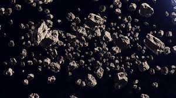
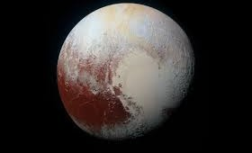
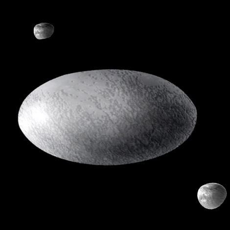
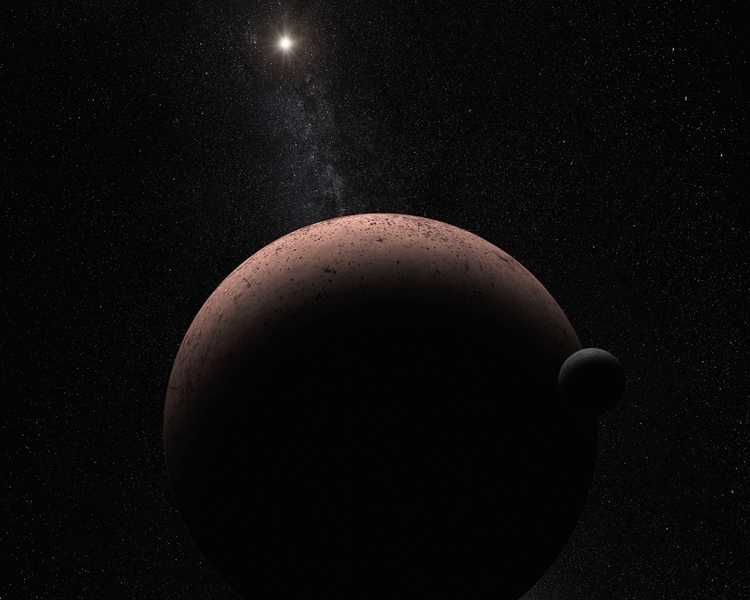
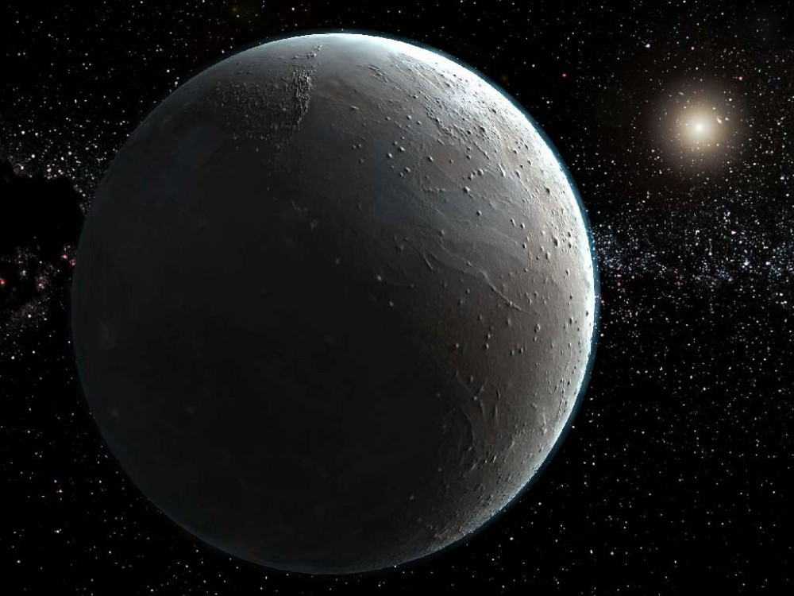

Главная

Колонизация планет Cолнечной системы и их спутников |
||||||||||||||||||||||||||||||||||||||||||||||||||||||||||
|
Пояс Койпера и Облако Оорта 
Как можно использовать Пояс Койпера и Облако Оорта? Аналогично Главному поясу астероидов, Пояс Койпера и Облако Оорта можно использовать как источник ресурсов. Существует три возможных варианта добычи сырья:
Высококачественная переработка сырья прямо на месте добычи позволит существенно снизить затраты на транспортировку добытых материалов, хотя для этого потребуется доставка на астероид дополнительного оборудования. Добыча и переработка полезных ископаемых на астероиде требует специализированного оборудования, способного работать в условиях открытого космоса. Из-за малой силы тяжести даже сравнительно небольшой импульс может оказаться достаточным, чтобы оборудование могло сорваться от поверхности астероида и улететь в открытый космос, поэтому всё оборудование должно надёжно закрепляться. Стыковку с астероидом можно выполнить с помощью гарпуна: специальный снаряд выстреливается в поверхность астероида и углубляется в ней, тем самым служа якорем, после чего посредством лебёдки и троса, закреплённого на гарпуне, к поверхности притягивается сам корабль или оборудование. При этом необходимо, чтобы поверхность астероида была достаточно твёрдая, чтобы гарпун надёжно закрепился в ней. Существует несколько возможных способов добычи руды:
Из-за большого расстояния между Землёй и астероидом, ввиду конечности скорости передачи сигнала, будет иметь место довольно большая задержка сигнала в несколько десятков минут или даже больше, в зависимости от расстояния астероида от Земли. Таким образом, для работы любого горнодобывающего оборудования необходимы либо очень высокая степень автоматизации, либо присутствие человека непосредственно на астероиде. Люди также будут необходимы для устранения неполадок и поддержания работоспособности оборудования. С другой стороны, задержка связи на несколько минут не мешает автоматическим аппаратам. Перемещение астероида на безопасную орбиту между Луной и Землёй возможно путем высадки на астероид робота-строителя (или нескольких взаимосвязанных роботов), добычи некоторого небольшого количества ресурсов и 3D-печати в нужной точке астероида двигателя. Далее двигатель на астероиде включается и перемещает его на нужную орбиту. А робот-строитель, выполнив свою работу, отправляется на следующий астероид и повторяет свои действия. Для ускорения процесса добычи возможен и вариант с печатью роботом своей копии перед покиданием астероида. Или же как промежуточную станцию при полетах к другим планетам. Как можно выбрать астероид для колонизации?
Плутон Параметры:
Колонизация ПлутонаДля контроля за процессом колонизации и терраформированием, а в последствии и просто за планетой, как и в случае других планет, необходимо построить базу на орбите Плутона, которая должна будет включать в свои функции:
В качестве орбитальной базы может выступать одна-две крупные орбитальные станции и группировка специализированных спутников. Первую же базу на Плутоне необходимо накрыть защитным куполом, который будет согревать ее, защищать от излучения, и удерживать воздух. Солнечная энергия на поверхности Плутона настолько скудна что сам экономический смысл солнечной энергетики на Плутоне полностью лишен смысла. Собственной тепловой энергии у Плутона также крайне мало, поэтому ни о каких «запасах геотермальной энергии» на Плутоне также не может быть и речи. Ну Плутоне может использоваться термоядерная энергетика. За миллиарды лет на Плутоне могло теоретически накопится немалое количество гелия-3, и скорее всего водный лед Плутона (запасы которого огромны) содержит высокий процент дейтерия. Вопросы наличия уранового или ториевого сырья на Плутоне в настоящий момент открыты, и представляются маловероятными. Как и на поверхности других холодных миров, Плутон предоставляет все условия для строительства любых сооружений из льда. Холод на Плутоне достигает такой величины, что прочность водного льда достигает прочности конструкционной стали. Вопросы металлургии на Плутоне в настоящий момент времени открыты, так как сам химический состав его поверхности неизвестен, хотя предположительно должен содержать достаточные концентрации легких элементов типа алюминия, кремния и магния. Электротранспорт займет свое место и на поверхности Плутона. Глубокий холод, царящий на Плутоне, позволит также широкое применение сверхпроводящих транспортных систем: пассажирские и грузовые поезда на магнитной подушке. Для повышения температуры планеты предлагается разместить рядом с ней солнечные или термоядерные электростанции, передающие выработанную энергию на поверхность Плутона с помощью лазеров. Плюсы и минусы колонизации Плутона
НО!
ВыводыКолонизация Плутона – это на данное время только гипотетический проект. Но его осуществление натолкнет человечество на освоение других космических тел, которые находятся за пределами солнечной системы. Также Плутон – это огромный источник ресурсов и энергии, которых так не хватает на Земле. Хаумеа Параметры:
Колонизация ХаумеаПервым колонизаторам придется построить базу на поверхности планеты, но при этом сила притяжения очень мала у Хаумеа и есть огромная возможность сорваться с ее поверхности, да и саму базу необходимо будет очень крепко зацепить за планету. Далее надо покрыть ее куполом, который будет защищать базу от воздействия макрокосмоса. Также можно построить и орбитальную базу, но она должна будет иметь большую угловую скорость и находиться на безопасном расстоянии от планеты. Как и на других транснептуновых объектах, на Хаумеа практически невозможно использовать солнечную энергию и энергию термальных вод. Единственный источник энергии пригодный для Хаумеа – ядерная энергетика. Гипотетически за продолжительное время на поверхности Хаумеа накопилось достаточное кол-во гелия-3 и других источников ядерного топлива. Что касается передвижения, то тут также необходим электротранспорт, а низкая температура также позволит использовать сверхпроводящие рельсы. Одно из первых мест займет передвижение на воздушной подушке. Планета Хаумеа находится очень далеко от Солнца и солнечной энергии на ее поверхность поступает очень мало, поэтому можно поставить систему зеркал, которая будет фокусировать достаточное кол-во этой энергии на Хаумеа. Также надо будет с помощью комет замедлить вращение этой планеты до земного. Гипотетически Хаумеа тогда под действием собственного притяжения приобретет близкую к шарообразной форму. Затем надо будет увеличить массу планеты. Далее нужны буду и ледяные кометы, чтобы пополнить запасы воды на ее поверхности. Также они разогреют ее поверхность и растопят углекислый газ на ее поверхности, который даст начало созданию атмосферы. Потом необходимо будет занести цианобактерии, которые будут также создавать атмосферу, пригодную для жизни. Плюсы и минусы колонизации Хаумеа
НО!
ВыводыКолонизация Хаумеа – это на данное время только гипотетический проект. Но его осуществление натолкнет человечество на освоение других космических тел, которые находятся за пределами солнечной системы. Также Хаумеа – это огромный источник ресурсов и энергии, которых так не хватает на Земле. Макемаке Параметры:
Колонизация МакемакеПервым колонизаторам придется построить базу на поверхности планеты, но при этом сила притяжения очень мала у Макемаке и есть огромная возможность сорваться с ее поверхности, да и саму базу необходимо будет очень крепко зацепить за планету. Далее надо покрыть ее куполом, который будет защищать базу от воздействия макрокосмоса. Также можно построить и орбитальную базу, но она должна будет иметь большую угловую скорость и находиться на безопасном расстоянии от планеты. Как и на других транснептуновых объектах, на Макемаке практически невозможно использовать солнечную энергию и энергию термальных вод. Единственный источник энергии пригодный для Макемаке – ядерная энергетика. Гипотетически за продолжительное время на поверхности Макемаке накопилось достаточное кол-во гелия-3 и других источников ядерного топлива. Что касается передвижения, то тут также необходим электротранспорт, а низкая температура также позволит использовать сверхпроводящие рельсы. Одно из первых мест займет передвижение на воздушной подушке. На Макемаке аналогично всем плутоидам очень низкая температура. Для повышения температуры планеты предлагается разместить рядом с ней солнечные или термоядерные электростанции, передающие выработанную энергию на поверхность Макемаке с помощью лазеров. Также необходимо будет увеличить массу планеты до земной. Так у Макемаке появится достаточная сила притяжения, а энергия лазеров растопит углекислый газ на ее поверхности, что даст начало созданию атмосферы. Потом направить ледяные кометы на Макемаке, они пополнят кол-во воды, внесут свой вклад в атмосферу планеты и разогреют ее поверхность, а также гипотетически угловая скорость будет как и у Земли, а значит, возможно, появится магнитное поле у планеты. Если же достаточная угловая скорость не будет набрана, то можно пустить несколько комет по касательной к ее поверхности, они сильнее ее раскрутят, но нагреют на минимальное изменение температуры. Далее необходимо будет пустить цианобактерии и растения на Макемаке, которые окончат создание атмосферы. Плюсы и минусы колонизации Макемаке
НО!
ВыводыКолонизация Макемаке – это на данное время только гипотетический проект. Но его осуществление натолкнет человечество на освоение других космических тел, которые находятся за пределами солнечной системы. Также Макемаке – это огромный источник ресурсов и энергии, которых так не хватает на Земле. Эрида Параметры:
Колонизация ЭридыПервым колонизаторам придется построить базу на поверхности планеты, но при этом сила притяжения очень мала у Эриды и есть огромная возможность сорваться с ее поверхности, да и саму базу необходимо будет очень крепко зацепить за планету. Далее надо покрыть ее куполом, который будет защищать базу от воздействия макрокосмоса. Также можно построить и орбитальную базу, но она должна будет иметь большую угловую скорость и находиться на безопасном расстоянии от планеты. Как и на других транснептуновых объектах, на Эриде практически невозможно использовать солнечную энергию и энергию термальных вод. Единственный источник энергии пригодный для Эриде – ядерная энергетика. Гипотетически за продолжительное время на поверхности Эриды накопилось достаточное кол-во гелия-3 и других источников ядерного топлива. Что касается передвижения, то тут также необходим электротранспорт, а низкая температура также позволит использовать сверхпроводящие рельсы. Одно из первых мест займет передвижение на воздушной подушке. На Эриде аналогично всем плутоидам очень низкая температура. Для повышения температуры планеты предлагается разместить рядом с ней солнечные или термоядерные электростанции, передающие выработанную энергию на поверхность Эриды с помощью лазеров. Также необходимо будет увеличить массу планеты до земной. Так у Эриды появится достаточная сила притяжения, а энергия лазеров растопит углекислый газ на ее поверхности, что даст начало созданию атмосферы. Потом направить ледяные кометы на Эриду, они пополнят кол-во воды, внесут свой вклад в атмосферу планеты и разогреют ее поверхность, а также гипотетически угловая скорость будет как и у Земли, а значит, возможно, появится магнитное поле у планеты. Если же достаточная угловая скорость не будет набрана, то можно пустить несколько комет по касательной к ее поверхности, они сильнее ее раскрутят, но нагреют на минимальное изменение температуры. Далее необходимо будет пустить цианобактерии и растения на Эриду, которые окончат создание атмосферы. Плюсы и минусы колонизации Эриды
НО!
ВыводыКолонизация Эриды – это на данное время только гипотетический проект. Но его осуществление натолкнет человечество на освоение других космических тел, которые находятся за пределами солнечной системы. Также Эрида – это огромный источник ресурсов и энергии, которых так не хватает на Земле. |

Астероиды 
Плутон 
Хаумеа 
Макемаке 
Эрида 
|
|||||||||||||||||||||||||||||||||||||||||||||||||||||||||

© Сайт проекта колонизации планет Солнечной системы 2020 -
|
||||||||||||||||||||||||||||||||||||||||||||||||||||||||||